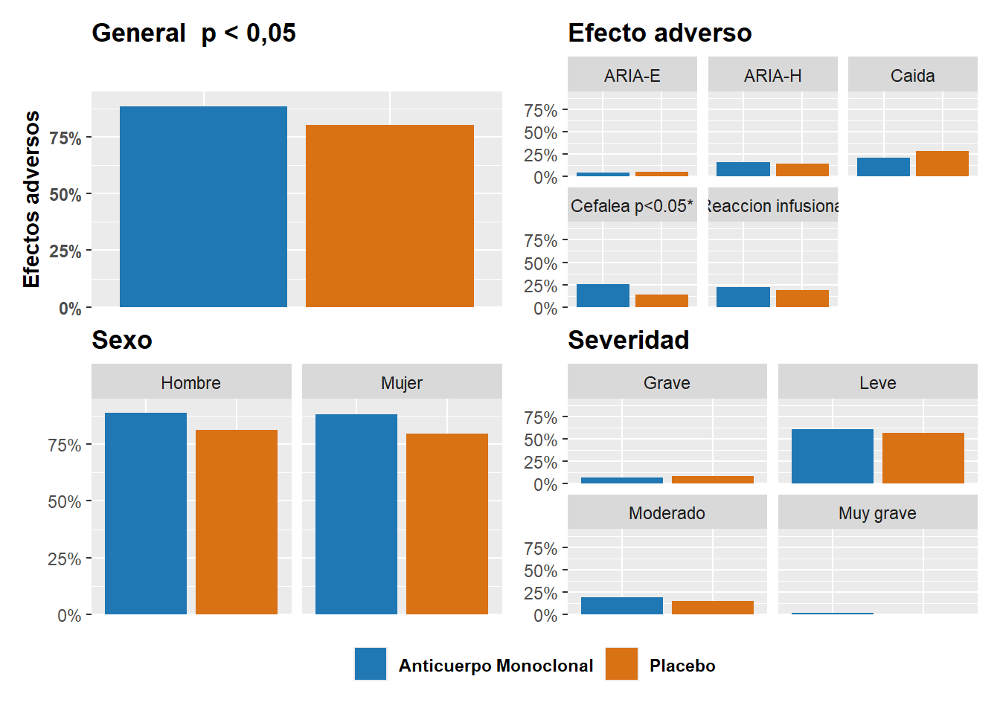
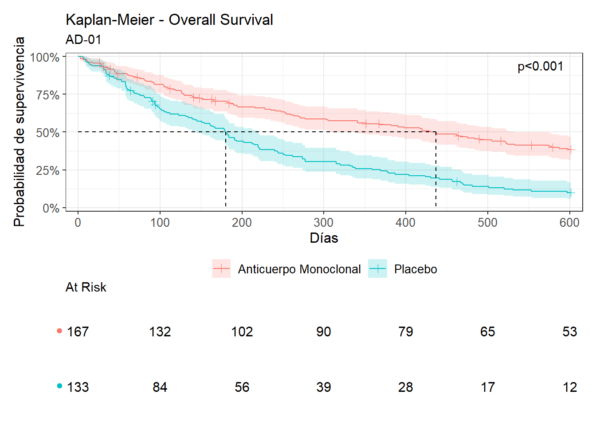
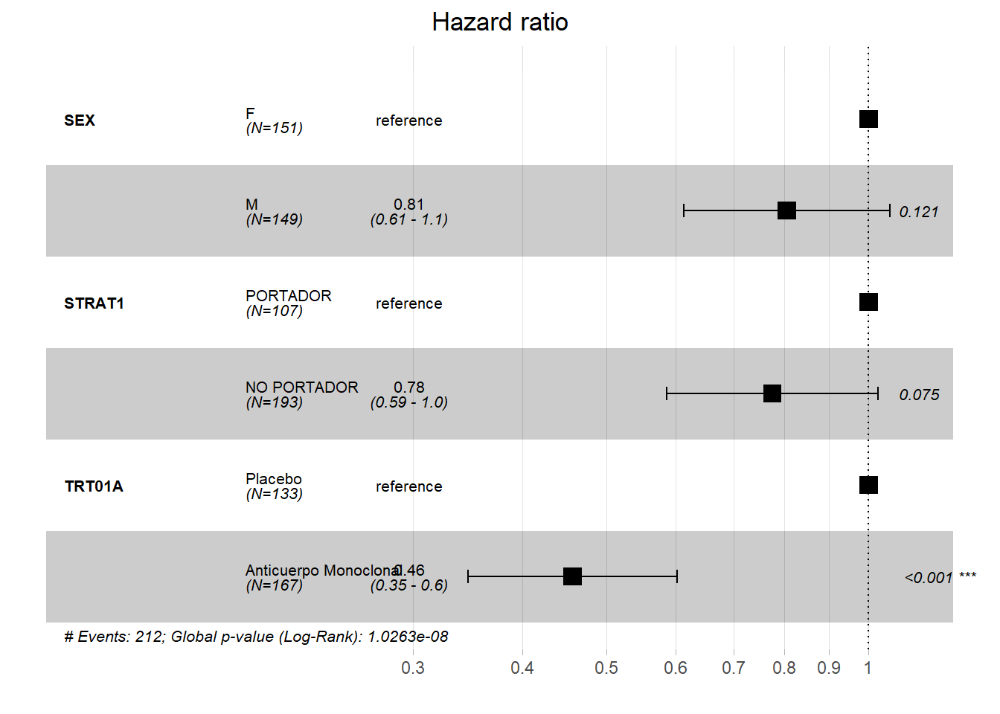
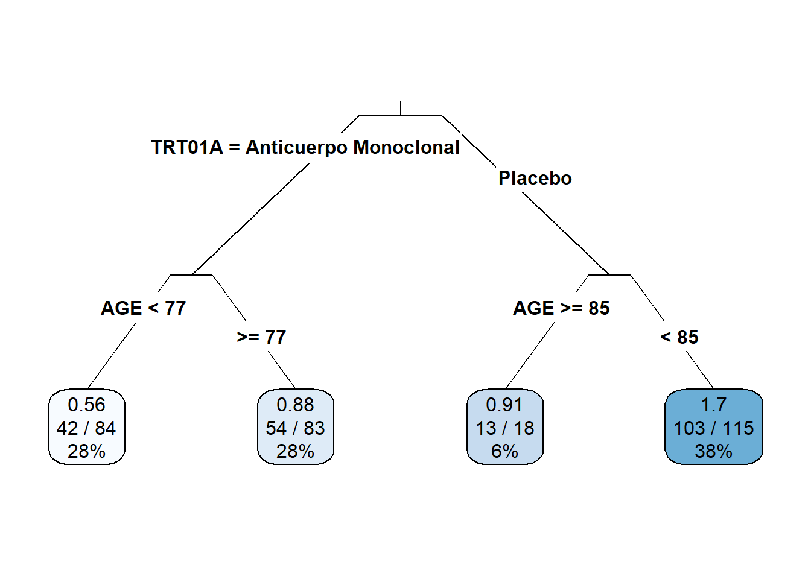
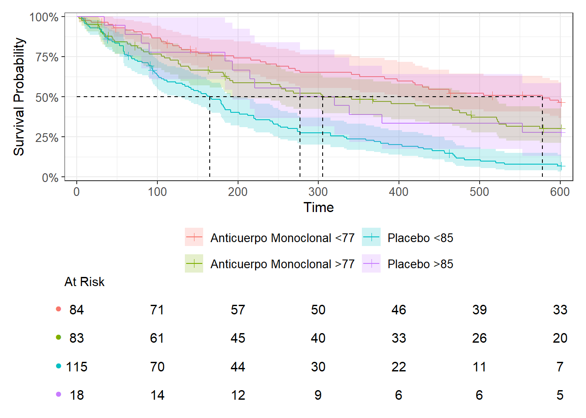
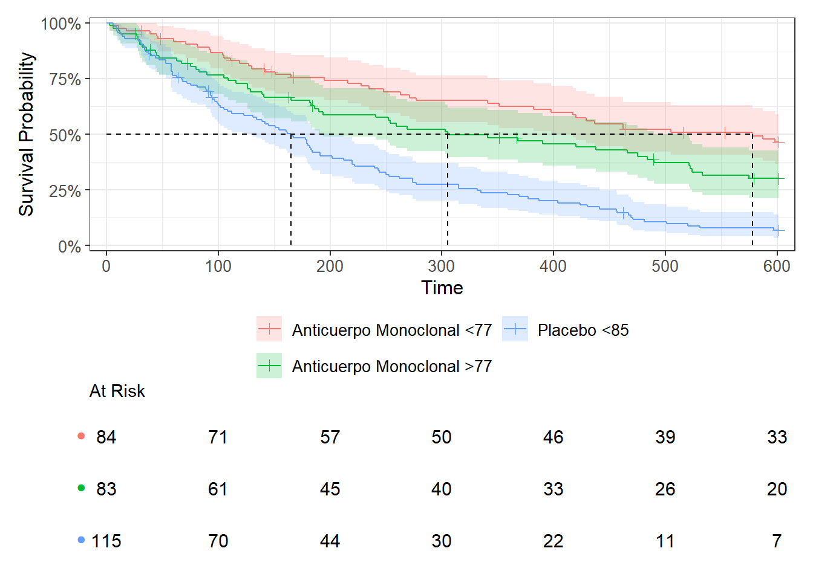

set.seed(202)Análisis estadístico
Librerías
library(haven)
library(gtsummary)
library(tidyverse)
library(patchwork)
library(scales)
library(survival)
library(survminer)
library(ggsurvfit)
library(rpart)
library(rpart.plot)Cargar los datos de ADAM
adae<-read_xpt("./results/adae.xpt")
adsl<-read_xpt("./results/adsl.xpt")
adtte<-read_xpt("./results/adtte.xpt")
adft <- read_xpt("./results/adft.xpt")
adqs<-read_xpt("./results/adqs.xpt")Diferencias en frecuencia de eventos adversos por rama de tratamiento
descriptive_ae <- left_join(adsl |> select(USUBJID,TRT01A,SEX), adae |> select(USUBJID, AETERM, AESEV), by = "USUBJID")
descriptive_ae_clean <- descriptive_ae |>
mutate(
AETERM = replace_na(AETERM, "No efecto adverso"),
AESEV = replace_na (AESEV,0),
General = case_when(
AESEV == 0 ~ "No Efecto adverso",
AESEV > 0 ~ "Efecto adverso"),
AESEV = case_when(
AESEV == 0 ~ "No efecto adverso",
AESEV == 1 ~ "Leve",
AESEV == 2 ~ "Moderado",
AESEV == 3 ~ "Grave",
AESEV == 4 ~ "Muy grave"),
AESEV = factor(AESEV, levels = c("No efecto adverso", "Leve", "Moderado", "Grave", "Muy grave")),
AETERM = if_else(AETERM == "reaccion infusional", "Reaccion infusional", AETERM),
AETERM = factor(AETERM, levels = c("No efecto adverso", "Reaccion infusional", "Cefalea", "Caida", "ARIA-E", "ARIA-H")),
SEX = factor(SEX, levels = c("M", "F"), labels = c("Hombre", "Mujer"))
) |>
select(USUBJID,General, SEX, TRT01A,AETERM, AESEV)
aeterm_indicators <- descriptive_ae_clean |>
distinct(USUBJID, TRT01A, SEX, AETERM) |>
mutate(value = 1) |>
pivot_wider(
id_cols = c(USUBJID, TRT01A, SEX),
names_from = AETERM,
values_from = value,
values_fill = 0,
)
aesev_indicators <- descriptive_ae_clean |>
distinct(USUBJID,TRT01A,SEX,AESEV) |>
mutate(value = 1) |>
pivot_wider(
id_cols = c(USUBJID,TRT01A,SEX),
names_from = AESEV,
values_from = value,
values_fill = 0,
)
aeterm_frequency_analysis_table <- aeterm_indicators |>
select(-USUBJID, -SEX) |>
tbl_summary(by = TRT01A) |>
add_p()
aesev_frequency_analysis_table<- aesev_indicators |>
select(-USUBJID, -SEX) |>
tbl_summary(by=TRT01A) |>
add_p()
sex_general_frequency_analysis_table <- descriptive_ae_clean |>
select(-USUBJID, -AETERM, -AESEV) |>
tbl_summary(by = TRT01A, missing = "no", label = list(SEX ~"Sexo")) |>
add_p()
combined_table <- tbl_stack(
list(sex_general_frequency_analysis_table,aeterm_frequency_analysis_table, aesev_frequency_analysis_table),
group_header = c("","Efecto adverso","Severidad"))
combined_table| Characteristic | Anticuerpo Monoclonal N = 1671 |
Placebo N = 1331 |
p-value2 |
|---|---|---|---|
| General | 0.049 | ||
| Efecto adverso | 148 (89%) | 107 (80%) | |
| No Efecto adverso | 19 (11%) | 26 (20%) | |
| Sexo | 0.10 | ||
| Hombre | 90 (54%) | 59 (44%) | |
| Mujer | 77 (46%) | 74 (56%) | |
| Efecto adverso | |||
| Caida | 35 (21%) | 38 (29%) | 0.13 |
| Cefalea | 43 (26%) | 18 (14%) | 0.009 |
| Reaccion infusional | 37 (22%) | 25 (19%) | 0.5 |
| No efecto adverso | 19 (11%) | 26 (20%) | 0.049 |
| ARIA-H | 26 (16%) | 19 (14%) | 0.8 |
| ARIA-E | 7 (4.2%) | 7 (5.3%) | 0.7 |
| Severidad | |||
| Leve | 102 (61%) | 76 (57%) | 0.5 |
| Moderado | 32 (19%) | 20 (15%) | 0.3 |
| No efecto adverso | 19 (11%) | 26 (20%) | 0.049 |
| Grave | 12 (7.2%) | 11 (8.3%) | 0.7 |
| Muy grave | 2 (1.2%) | 0 (0%) | 0.5 |
| 1 n (%) | |||
| 2 Pearson’s Chi-squared test | |||
Globalmente el número de eventos adversos tiene diferencias estadísticamente significativas entre los grupos. En concreto la frecuencia de la cefalea es significativamente distinta en el grupo control y en el de tratamiento. No se observan diferencias significativas de frecuencia de eventos adversos por sexo, por gravedad o por otros efectos adversos como reacción infusional, ARIA-H o ARIA-E.
Gráficos de frecuencias
n_por_brazo <- data.frame(
TRT01A = c("Anticuerpo Monoclonal", "Placebo"),
n_total = c(167, 133)
)
ae_plot_data <- descriptive_ae_clean |>
filter(General == "Efecto adverso") |>
group_by(TRT01A) |>
summarise(n_ea = n(), .groups = "drop") |>
left_join(n_por_brazo, by = "TRT01A") |>
mutate(proporcion = (n_ea / n_total))
n_by_trt <- adsl |> count(TRT01A, name = "n_total")
n_by_trt_sex <- adsl |>
mutate(SEX = factor(SEX, levels = c("M","F"), labels = c("Hombre","Mujer"))) |>
count(TRT01A, SEX, name = "n_total")
ae_counts <- descriptive_ae |>
mutate(
AETERM = replace_na(AETERM, "No efecto adverso"),
AESEV = replace_na(AESEV, 0),
AESEV = case_when(
AESEV == 0 ~ "No efecto adverso",
AESEV == 1 ~ "Leve",
AESEV == 2 ~ "Moderado",
AESEV == 3 ~ "Grave",
AESEV == 4 ~ "Muy grave"
),
AETERM = if_else(AETERM == "reaccion infusional", "Reaccion infusional", AETERM),
AETERM =if_else(AETERM == "Cefalea", "Cefalea p<0.05*", AETERM),
SEX = factor(SEX, levels = c("M","F"), labels = c("Hombre","Mujer"))
) |>
filter(AETERM != "No efecto adverso") |>
group_by(TRT01A, SEX, AETERM, AESEV) |>
summarise(n_ea = n_distinct(USUBJID), .groups = "drop")
ae_term <- ae_counts |>
group_by(TRT01A, AETERM) |>
summarise(n_ea = sum(n_ea), .groups = "drop") |>
left_join(n_by_trt, by = "TRT01A") |>
mutate(proporcion = n_ea / n_total)
ae_sex <- ae_counts |>
group_by(TRT01A, SEX) |>
summarise(n_ea = sum(n_ea), .groups = "drop") |>
left_join(n_by_trt_sex, by = c("TRT01A", "SEX")) |>
mutate(proporcion = n_ea / n_total)
ae_severity <- ae_counts |>
group_by(TRT01A, AESEV) |>
summarise(n_ea = sum(n_ea), .groups = "drop") |>
left_join(n_by_trt, by = "TRT01A") |>
mutate(proporcion = n_ea / n_total)
ymax <- min(1, max(c(ae_plot_data$proporcion, ae_term$proporcion, ae_sex$proporcion, ae_severity$proporcion), na.rm = TRUE) * 1.05)
plot_general <- ggplot(ae_plot_data, aes(x = TRT01A, y = proporcion, fill = TRT01A)) +
geom_col() +
labs(title = "General p < 0,05", x = NULL, y = "Efectos adversos") +
scale_y_continuous(labels = percent_format(accuracy = 1), limits = c(0, ymax), expand = expansion(mult = c(0, 0.02))) +
scale_fill_manual(name = NULL, values = c("Anticuerpo Monoclonal" = "#1f77b4", "Placebo" = "#d97115")) +
theme(text = element_text(face = "bold"),axis.text.x = element_blank(), axis.ticks.x = element_blank())
plot_por_ea <- ggplot(ae_term, aes(x = TRT01A, y = proporcion, fill = TRT01A)) +
geom_col(show.legend = FALSE) + facet_wrap(~ AETERM) + scale_y_continuous(labels = percent_format(accuracy = 1), limits = c(0, ymax), expand = expansion(mult = c(0, 0.02))) +
scale_fill_manual(values = c("Anticuerpo Monoclonal" = "#1f77b4", "Placebo" = "#d97115")) +
theme(axis.text.x = element_blank(), axis.ticks.x = element_blank(), plot.title = element_text(face = "bold"), axis.title = element_blank(), legend.position = "none") +
labs(title = "Efecto adverso")
plot_por_sex <- ggplot(ae_sex, aes(x = TRT01A, y = proporcion, fill = TRT01A)) +
geom_col(show.legend = FALSE) + facet_wrap(~ SEX) + scale_y_continuous(labels = percent_format(accuracy = 1), limits = c(0, ymax), expand = expansion(mult = c(0, 0.02))) +
scale_fill_manual(values = c("Anticuerpo Monoclonal" = "#1f77b4", "Placebo" = "#d97115")) +
theme(axis.text.x = element_blank(), axis.ticks.x = element_blank(), plot.title = element_text(face = "bold"), axis.title = element_blank(), legend.position = "none") +
labs(title = "Sexo")
plot_por_severidad <- ggplot(ae_severity, aes(x = TRT01A, y = proporcion, fill = TRT01A)) +
geom_col(show.legend = FALSE) + facet_wrap(~ AESEV) + scale_y_continuous(labels = percent_format(accuracy = 1), limits = c(0, ymax), expand = expansion(mult = c(0, 0.02))) +
scale_fill_manual(values = c("Anticuerpo Monoclonal" = "#1f77b4", "Placebo" = "#d97115")) +
theme(axis.text.x = element_blank(), axis.ticks.x = element_blank(), plot.title = element_text(face = "bold"), axis.title = element_blank(), legend.position = "none") +
labs(title = "Severidad")
final_plot <- (plot_general + plot_por_ea) / (plot_por_sex + plot_por_severidad) +
plot_layout(guides = "collect") & theme(legend.position = "bottom")
final_plot
Análisis de supervivencia: curvas Kaplan-Meier
El endpoint de nuestro ensayo será Progression Free Survival pues medimos Tiempo hasta el Deterioro Sintomático (Días) como vemos en:
unique(adtte$PARAM)[1] "Tiempo hasta el Deterioro Sintomático (Días)"survival_curves<-survfit2(Surv(AVAL,1-CNSR)~TRT01A, data = adtte)
plot_survival<- ggsurvfit(survival_curves) +
add_confidence_interval() +
add_risktable(
risktable_stats = "n.risk",
risktable_height = 0.33,
size = 4) +
add_risktable_strata_symbol(symbol = "\U25CF",size =10) +
add_pvalue(location = "annotation", caption = "{p.value}") +
add_censor_mark() +
scale_ggsurvfit() +
add_quantile() +
labs(
title = "Kaplan-Meier - Overall Survival",
subtitle = "AD-01",
x = "Días",
y = "Probabilidad de supervivencia"
)
plot_survival
Método de filtrado “forward” por p-valor
En este método se realizan modelos univariables, de esta manera se eligen aquellas variables cuyo valor de p sea menor que un umbral predefinido (p< 0.1 en este caso). Esto es un enfoque ‘forward’, en el que se van añadiendo variables a un modelos según su significancia.
Este método de selección de variables tiene algunas limitaciones:
Según [1]: “Aunque es cierto que los coeficientes de regresión suelen ser mayores en modelos univariables que en multivariables, lo contrario puede también suceder”. “El prefiltrado univariable no es un prerrequisito ni añade ningún beneficio al construir modelos multivariable”.
El problema de este método es que no controla por variables de confusión, por lo que podríamos estar eliminando igualmente variables relevantes y quedándonos con irrelevantes. [2]
Probablemente una estrategia adecuada sería priorizar el conocimiento de expertos a priori en la selección de variables.
Si después de esa selección a priori de variables es necesario la reducción de variables para el modelo por alguna razón, se recomienda un aproximamiento backwards, es decir, una vez tener habiendo usado todas las variables para el modelo, reducir el número filtrando por pseudo R2 ajustado o AIC.
Análisis de Cox univariable
adsl$TRT01A <- factor(adsl$TRT01A, levels = c("Placebo", "Anticuerpo Monoclonal"))
adsl$STRAT1 <- factor(adsl$STRAT1, levels = c("PORTADOR", "NO PORTADOR"))
cox_univariable <- adsl |>
left_join(
adtte |> select(USUBJID, AVAL, CNSR),
by = "USUBJID") |>
select(AGE,SEX,STRAT1,ADASBL,MMSEBL,TRT01A,AVAL,CNSR) |>
tbl_uvregression(
method = coxph,
y = Surv(AVAL, 1-CNSR),
exponentiate = TRUE,
show_single_row = c("AGE", "SEX", "STRAT1", "ADASBL", "MMSEBL","TRT01A"),
label = list (
AGE = "Edad",
SEX = "Sexo (masculino)",
STRAT1 = "APOE (no portador)",
ADASBL = "ADAS-Cog Basal",
MMSEBL = "MMSE Basal"
)) |>
bold_p() |>
bold_labels()
cox_univariable| Characteristic | N | HR | 95% CI | p-value |
|---|---|---|---|---|
| Edad | 300 | 1.0 | 0.98, 1.01 | 0.6 |
| Sexo (masculino) | 300 | 0.74 | 0.56, 0.97 | 0.029 |
| APOE (no portador) | 300 | 0.73 | 0.55, 0.96 | 0.025 |
| ADAS-Cog Basal | 300 | 0.98 | 0.96, 1.01 | 0.3 |
| MMSE Basal | 300 | 1.01 | 0.97, 1.06 | 0.5 |
| TRT01A | 300 | 0.44 | 0.33, 0.58 | <0.001 |
| Abbreviations: CI = Confidence Interval, HR = Hazard Ratio | ||||
En este caso, el sexo masculino, la no presencia de APOE y el ser tratado con anticuerpo monoclonal son factores protectores estadísticamente significativos con respecto al sexo femenino, la presencia de APOE y el tratamiento con placebo respectivamente. Por otro lado, la edad, el ADAS-Cog basal y el MMSE basal no son significativos con valores de p>0.3.
Análisis de Cox multivariable
formula_cox_multivariable <- Surv(AVAL, 1-CNSR) ~ SEX + STRAT1 + TRT01A
adsl$TRT01A <- factor(adsl$TRT01A, levels = c("Placebo", "Anticuerpo Monoclonal"))
data_posibles_variables <-adsl |>
left_join(
adtte |> select(USUBJID,AVAL, CNSR),
by = "USUBJID") |>
select(AGE,SEX,STRAT1,ADASBL,MMSEBL,AVAL,TRT01A,CNSR)
modelo_cox_multivariable <- coxph(formula_cox_multivariable, data = data_posibles_variables)tabla_multivariable <- tbl_regression(
modelo_cox_multivariable,
exponentiate = TRUE,
show_single_row = c("SEX","TRT01A","STRAT1"),
label = list(
SEX = "Sexo (masculino)",
STRAT1 = "APOE (no portador)",
TRT01A = "Anticuerpo Monoclonal")) |>
bold_p( t = 0.05) |>
bold_labels()
tabla_multivariable | Characteristic | HR | 95% CI | p-value |
|---|---|---|---|
| Sexo (masculino) | 0.81 | 0.61, 1.06 | 0.12 |
| APOE (no portador) | 0.78 | 0.59, 1.03 | 0.075 |
| Anticuerpo Monoclonal | 0.46 | 0.35, 0.60 | <0.001 |
| Abbreviations: CI = Confidence Interval, HR = Hazard Ratio | |||
El tratamiento con anticuerpos monoclonales sigue siendo protector con respecto al placebo en el modelo multivariante, sin embargo tanto el ser no portador de APOE como el sexo masculino ya no son estadísticamente significativos en el modelo realizado con datos simulados. Esta pérdida de significancia indica que el sexo y la mutación de APOE no poseen un efecto pronóstico independiente real. Su significancia univariable era espuria y desaparece al ajustar el riesgo continuo por el verdadero factor determinante de la supervivencia (el tratamiento)
asuncion_de_riesgos_proporcionales <- cox.zph(modelo_cox_multivariable)
for(variable in rownames(asuncion_de_riesgos_proporcionales$table)){
p <- asuncion_de_riesgos_proporcionales$table[variable, "p"]
estado <- if (p > 0.05) "OK - se cumple asunción de riesgos proporcionales" else "AVISO - asunción de riesgos proporcionales NO se cumple"
cat(sprintf("%-12s p=%.4f -> %s\n", variable, p, estado))
}SEX p=0.5327 -> OK - se cumple asunción de riesgos proporcionales
STRAT1 p=0.5841 -> OK - se cumple asunción de riesgos proporcionales
TRT01A p=0.1948 -> OK - se cumple asunción de riesgos proporcionales
GLOBAL p=0.5011 -> OK - se cumple asunción de riesgos proporcionalesforest_plot <- ggforest(model = modelo_cox_multivariable,
data = as.data.frame(data_posibles_variables))
forest_plot
Árbol de decisión
Se realiza un árbol de decisión de forma exploratoria para identificar subgrupos de paciente con diferente pronóstico.
arbol_de_decision<- rpart(
Surv(AVAL,1-CNSR)~ AGE+ SEX+ STRAT1+ ADASBL+ MMSEBL+TRT01A,
data = data_posibles_variables,
method = "exp",
control = rpart.control(
cp=0.01,
minsplit = 20,
minbucket = 10
))
rpart.plot(arbol_de_decision,
type = 3,
extra = 101,
fallen.leaves = FALSE)
Se identifición de 4 subgrupos dependiendo de la rama de tratamiento y de la edad. En orden de mejor a peor pronóstico. Los puntos de corte de edad serían distintos en el grupo tratamiento (77 años) y el grupo placebo (85 años).
En realidad observamos que la única variable que es significativa en el modelo multivariable de Cox es tratamiento con respecto a placebo, en cuanto reducimos la complexidad del árbol coincide, solo aumentándola aparece la edad.
Curvan K-M por grupo
data_posibles_variables$node<- as.factor(arbol_de_decision$where)
data_posibles_variables <- data_posibles_variables %>%
mutate(node_label = case_when(
node == 3 ~ "Anticuerpo Monoclonal <77",
node == 4 ~ "Anticuerpo Monoclonal >77",
node == 6 ~ "Placebo >85",
node == 7 ~ "Placebo <85"
))
km_segun_arbol_de_decision<- ggsurvfit(survfit2(Surv(AVAL,1-CNSR)~node_label, data = data_posibles_variables)) +
add_confidence_interval() +
add_risktable(
risktable_stats = "n.risk",
risktable_height = 0.33,
size = 4) +
add_risktable_strata_symbol(symbol = "\U25CF",size =10) +
add_censor_mark() +
scale_ggsurvfit() +
add_quantile() +
theme(legend.position = "bottom") +
guides(color = guide_legend(ncol = 2))
km_segun_arbol_de_decision
De esta manera el gráfico no es informativo por el gran intervalo de confianza del grupo placebo >85 años, debido probablemente a su mínima muestra (18 pacientes) y tenemos grupos con una muestra muy pequeña (el grupo placebo >85 solo tiene 18 pacientes). Elimino ese grupo.
data_posibles_variables <- data_posibles_variables |>
filter(node_label != "Placebo >85" )
km_segun_arbol_de_decision<- ggsurvfit(survfit2(Surv(AVAL,1-CNSR)~node_label, data = data_posibles_variables)) +
add_confidence_interval() +
add_risktable(
risktable_stats = "n.risk",
risktable_height = 0.33,
size = 4) +
add_risktable_strata_symbol(symbol = "\U25CF",size =10) +
add_censor_mark() +
scale_ggsurvfit() +
add_quantile() +
theme(legend.position = "bottom") +
guides(color = guide_legend(ncol = 2))
km_segun_arbol_de_decision
Si el objetivo del árbol de decisión fuera de alguna manera estratificar a los pacientes, por ejemplo para incluirlos en programas de prevención, estratificarlos según el placebo no tendría sentido pues todos los pacientes serían tratados.
Bibliografía
[1]
Heinze G, Dunkler D. Five myths about variable selection. Transplant International: Official Journal of the European Society for Organ Transplantation 2017;30:6–10. https://doi.org/10.1111/tri.12895.
[2]
Sun GW, Shook TL, Kay GL. Inappropriate use of bivariable analysis to screen risk factors for use in multivariable analysis. Journal of Clinical Epidemiology 1996;49:907–16. https://doi.org/10.1016/0895-4356(96)00025-x.